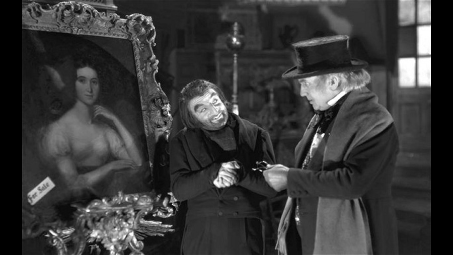

| Character | Actor |
|---|---|
| Little Nell | Elaine Benson |
| Grandfather Trent | Ben Webster |
| Quilp | Hay Petrie |
| Quilp's Wife | Beatrix Thomson |
| Sampson Brass | Gibb McLaughlin |
| Sally Brass | Lily Long |
| Dick Swiveller | Reginald Purdell |
| The Marchioness | Polly Ward |
| The Single Gentleman | James Harcourt |
| The Schoolmaster | J. Fisher White |
| Tom Codlin | Dick Tubb |
| Short Trotters | Roddy Hughes |
| Mrs. Jarley | Amy Veness |
| Kit | Peter Penrose |
| Tom Scott | Vic Filmer |
| Role | Person |
|---|---|
| Director | Thomas Bentley |
| Screenplay | Ralph Neale Margaret Kennedy |
The film was produced by British International Pictures, one of the two most prominent British film studios of the time, at its base at Elstree Studios. Bentley was a well-established director who worked on several of the company's presigous historical films during the decade. He had previously directed a number of Dickens adaptations during the silent era, but this was his only Dickens talkie. The film sought to achieve a "painterly" effect in its interpretation of the original work. The recreation of the grotesque elements of Dickens' novel has led to it being described as an "expressionist nightmare".